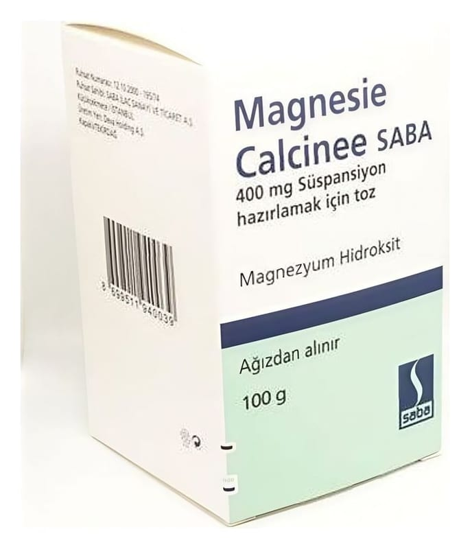

Magnesie Calcinee Lafar 100 g Toz

Ne için kullanılır
KT · Bölüm 1MAGNESİE CALCİNEE, beyaz renkli, kokusuz, tatsız, ince akıcı toz halinde olup sulandırılarak kullanılır. MAGNESİE CALCİNEE, bir mineral olan magnezyum içerir ve aşağıdaki durumlarda kullanılır: Flatulans (mide ve bağırsaklarda gaz olması) Mide ekşimesi Dispepsi (hazımsızlık) Hafif laksatif (yumuşatıcı) etkisinden dolayı kabızlık tedavisinde